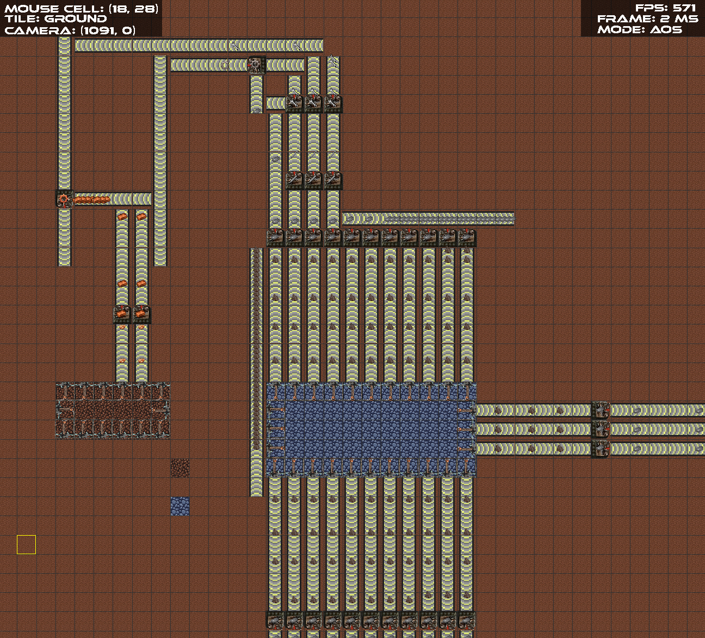
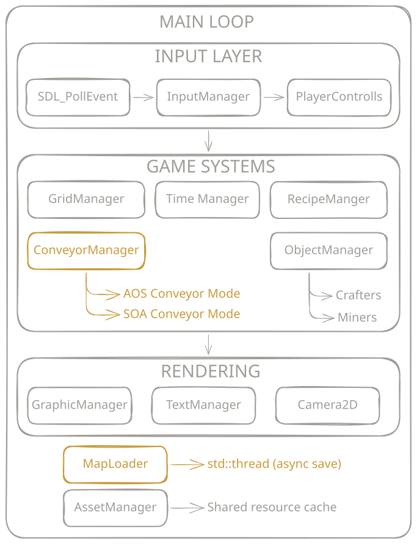

Project - 2026
A custom 2D game engine built from scratch in C++ to explore engine architecture and benchmark Object-Oriented vs Data-Oriented Programming at scale. The game simulates a factory environment with conveyors, miners, and crafters, chosen because its high entity count makes performance differences measurable and meaningful.

Context
The engine started with a clear technical question at its centre: how much does memory layout actually matter in a real simulation? A factory game is the ideal approach: conveyors move items every tick, miners produce at a fixed rate, crafters consume inputs and emit outputs. With potentially millions of entities updating per frame, the difference between AoS and SoA becomes very relevant.
Conveyors were implemented twice: once as a traditional Array of Structs (AoS) where each conveyor holds all its own data, and once as a Struct of Arrays (SoA) where each field is stored in its own contiguous array. The same simulation ran against both implementations and frame times were recorded across seven scenarios with increasing entity counts (see benchmark results section).
Architecture

The engine is built around a set of manager singletons, each owning a distinct system:
GraphicManager
SDL2 rendering pipeline, camera-space transforms and texture rendering
GridManager
Tile-based world grid, building placement and spatial functionality
ObjectManager
Entity lifecycle, creation, update ordering and destruction for crafters and miners
ConveyorManager
Hosts both AoS and SoA implementations of conveyors for benchmarking
AssetManager
Centralized texture storage and reuse to reduce memory usage
SaveLoadManager
JSON serialization on a dedicated std::thread
Camera2D
Pan and zoom with transform applied per render pass
InputManager
SDL2 event polling, frame-based edge state tracking (press/release/hold) and raw input handling for player controls
Benchmark results
Conveyors only - no items
| Conveyors | AoS | SoA |
|---|---|---|
| 2,000,000 | 790 ms | 720 ms |
| 1,000,000 | 400 ms | 360 ms |
| 500,000 | 200 ms | 180 ms |
| 250,000 | 100 ms | 90 ms |
With miners + items flowing
| Conveyors | AoS | SoA |
|---|---|---|
| 100,000 | 290 ms | 52 ms |
| 50,000 | 142 ms | 26 ms |
| 25,000 | 71 ms | 14 ms |
AoS vs SoA - items flowing (visualised)
When conveyors do not contain items, the performance difference is minimal. The dramatic difference appears when items are actively moving: each item lookup in AoS forces a cache miss by jumping between non-contiguous struct fields, while SoA keeps all positions in one array and all states in another, so sequential reads stay warm in cache. At 100,000 conveyors with items flowing, AoS costs 290 ms per frame. SoA brings that to 52 ms.
Multithreaded save / load
Saving and loading touch the full world state at once: serializing the grid, all building positions, conveyor states, and item locations to JSON. Running this on the main thread would freeze the simulation for hundreds of milliseconds at large world sizes.
The solution is a dedicated std::thread that takes a snapshot of the relevant state and serializes it independently, while the main loop continues updating and rendering. This keeps the game responsive during save operations regardless of world size.
Links